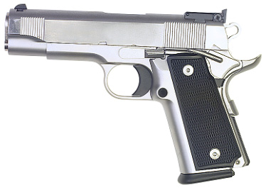
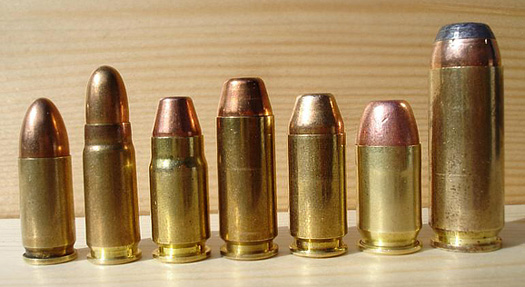

A pistol is characterized by semi-automatic features in which a slide sits on top of the frame. Bullet cartridges are loaded into a holding device called a magazine that is inserted into the handle of the pistol. The barrel sits inside the slide. Each pull of the trigger and discharge of a cartridge produces a recoil force that moves the slide back drawing a new bullet into the opening of the barrel. The slide then returns to its forward position, locking the bullet into the barrel. When the trigger is pulled again, the process repeats. Pistol bullet velocity can be considerably higher than a revolver’s velocity because the hot gases emerging from the bullet casing are contained within the barrel of the pistol, thereby increasing the pressure acting against the bullet as it moves down the barrel and out the muzzle.
The unique design of semi-automatic pistols allows for faster reloading times, higher firing rates, and higher magazine capacities (typically 10 to 16 bullets per magazine). The trigger can be pulled in rapid succession while keeping the pistol on target. For example, a person using the .40 Glock pistol is able to fire fifteen rounds of ammunition continuously before loading a new magazine.
Pistol ammunition varies in calibre, with 9 mm, .40, and .45 being the most common. Law enforcement agencies across North America typically use 9 mm or .40 calibre pistols although .45-calibre pistols are sometimes used.
While occasionally prone to jamming if not properly maintained, automatic weapons have increased among criminals in recent decades. Therefore, law enforcement agencies have adopted semi-automatic pistols because of their large magazine capacity. In addition, police are now using hollow point bullets. Recent trends include the use of semi-automatic rifles (carbines) by patrol officers in response to the increased firepower of some criminals. The public became aware of this increased firepower because of such high profile incidents as the 1994 North Hollywood shootout in Los Angeles.

Semi-automatic pistols have largely replaced .38 revolvers in police agencies across North America. This transition was stimulated in part by the tragic outcome of a FBI shootout in Miami-Dade County in 1986 when two FBI agents were killed and four others wounded by one of two gunmen armed with a semi-automatic .223 rifle.